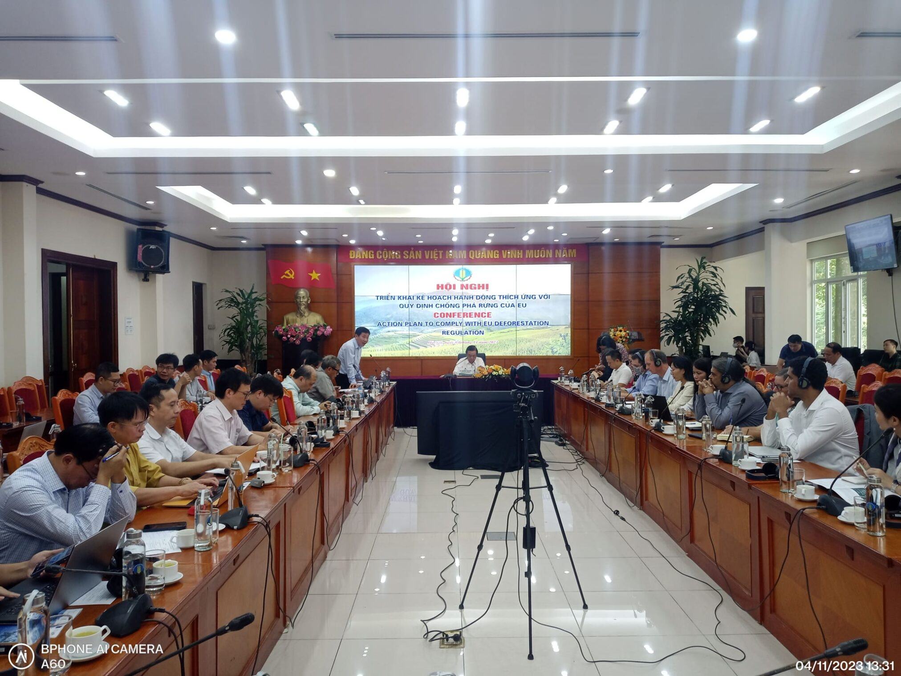

Blog Post Title 1
Published on: January 1, 2023
With important deadlines approaching, Vietnam faces challenges in meeting this regulation because of the need for an information system, garden data, and reference forest maps by December 31, 2020, according to EUDR regulations. Besides, the complex supply chain is a challenge for implementing traceability according to EUDR requirements. To ensure livelihoods for 600,000 small- and micro-scale farming households, including a part of production on forestry land and land near forests, there needs to be a mechanism to protect forests..